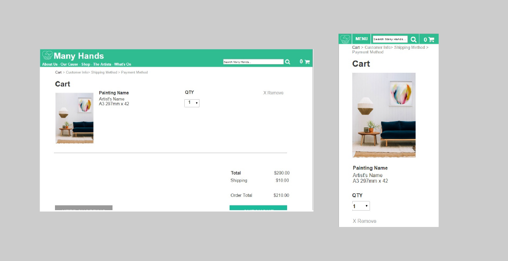

Many Hands Usability Review
Role: UX Lead
- Comparative Analysis
- Feature Analysis
- Trunk Tests
- Usability Testing
- Low-Fidelity Wireframes
- Written report
- Written report
Discovery
Many Hands is a social enterprise that sells art online to raise money for local charities.
An initial meeting let us decide the scope of the project – and how we could best serve Many Hands. The result of our meeting meant that, because Many Hands already had a working site which needed improvement, our role would mainly be as user researchers and performing usability testing.
Afterwards, the group had a strategy meeting to decide which methods would be most useful to achieve these goals, and since personas, survey results, and competitive analysis had been supplied, we decided to use the following tools: Comparative Analysis, Feature Analysis, Card Sort, Treejack.
Research
As we had already been supplied with some initial research, including Personas, we decided that the best approach would be to supplement the existing Competitive Analysis by researching companies who had either a similar ethos to Many Hands or provided a similar service of selling art online.
Our comparative analysis took into consideration 5 companies, ranging from charities such as the Thank-You Movement to e-commerce platforms like Etsy. These companies were chosen for either their strong connection to using products as a vehicle to drive charity – like the Thankyou movement, how their websites fostered emotional involvement from the users (Charity:Water) or in the case of Etsy, simply being a powerful e-commerce platform. Each had aspects which we deemed to be important to ManyHands.
Outlined in Steve Krug’s Don’t Make Me Think, a Trunk Test is a short test where the participant is presented with a webpage and asked to find key navigation elements.
This helped us gain a better understanding of where problems with the site’s navigation lay at an executive level. The results from this test informed a lot of our later recommendations and provided strong evidence for which we based them off.
Testing
After we had completed our research we moved onto testing. As with previous assignments at GA, the user testing was based on our primary persona and the journey map and scenarios we had developed from that. From this, we took our tasks which we would give to usability testers. These tasks were specifically designed to help explore what we perceived to be possible pain points during the research phase of the project. While structured, the tasks also offered scope for users to explore the site and discover things on their own.

Synthesis and Solutions
The next step in the process was to collate and interpret all the data collected so far and then derive a solution from that which we could then take to Many Hands as actionable suggestions which would improve their website.
We found that the main problems lay in 4 segments: Visibility, Interaction, Language and Missing Content, then categorized and listed each issue that had arisen during research and assigned each a priority level from 1 to 4.
In addition to this, we included wireframes as part of the solutions we provided to Many Hands.

We tackled the design problem as a group – sketching our wireframes on paper individually. We did this so that we could devise unique ideas, and then take the strongest aspects of each and create a better wireframe from them.
After we had settled on a design for each of the problem areas we were going to tackle, we delegated a portion of the work to each member of the group. These wireframes were done in Axure RP, as we needed them to be interactive.
